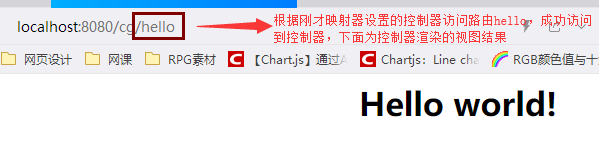
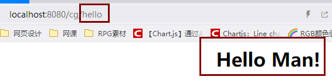

此处只是对SpringMVC常见的三个控制器映射器做探讨，没有深入研究其源码实现，只是探讨其使用方法。以下探究的环境都是基于我的之前写过的一篇博客上说明的环境（包括前端控制器配置等），如需复刻，请参照：SpringMVC之HelloWorld
即将探讨的三个控制器映射器如下：
我的博客中写的一篇《SpringMVC之HelloWorld》的案例用到的映射器就是BeanNameUrlHandlerMapping，配置了这个映射器后，要求配置的控制器的bean的name为访问路由。具体的可以看我之前写的：SpringMVC之HelloWorld，注意观察我配置的控制器的name和最后我访问的url是否对应就行了。
使用方法当然首先是在Spring容器中配置这个映射器咯，配置之前，先说明其好处（相对于BeanNameUrlHandlerMapping）：可以对映射进行统一配置，像BeanNameUrlHandlerMapping，我们创建一个控制器，就需要配置控制器的时候设置其name作为访问的url，当控制器多了，就不好统一规划（眼睛都看花=-=）。但是用SimpleUrlHandlerMapping，可以统一在此映射器处配置控制器的访问url。具体的配置参考如下：
<!-- 配置处理器映射器-->
<bean class="org.springframework.web.servlet.handler.SimpleUrlHandlerMapping">
<property name="mappings">
<props>
<prop key="/hello">conOne</prop>
</props>
</property>
</bean>
<!-- 配置控制器-->
<bean id="conOne" class="com.test.ssm.web.controller.TestController" />Notice：上面配置的映射器的conOne是控制器的id，所以很容易观察到使用SimpleUrlHandlerMapping的方法就是：将配置好的控制器的id放到 <prop>标签里，然后 <prop> 标签的key属性就是此id对应控制器的访问路由。
测试结果如下：

这个就是最最常用的了，就是大名鼎鼎的注解式映射器。会对类中标记的@RequestMapping的方法进行映射（也就是标记@RequestMapping同时设定url，此url为此控制器中的此方法的访问路由）。然后需要注意： RequestMappingHandlerMapping是注解式的映射器，那么控制器适配器也得用注解式的，控制器的注册也得用注解式。 配置这三件套（注解式映射器、控制器适配器、控制器）的参考如下：
<!-- 注解映射器 -->
<bean class="org.springframework.web.servlet.mvc.method.annotation.RequestMappingHandlerMapping"/>
<!-- 注解适配器-->
<bean class="org.springframework.web.servlet.mvc.method.annotation.RequestMappingHandlerAdapter"/>
<!-- 组件扫描器，扫描控制器，控制器需要使用注解@Controller,此处就是扫描controller包下的所有带@Controller注解的控制器类-->
<context:component-scan base-package="com.test.ssm.web.controller"/>Notice：上述的组件扫描器的base-package设置的就是我的项目的一个包：com.test.ssm.web.controller。如果你复刻，得按照你的项目的实际情况设定。设定哪个包，SpringMVC就将扫描哪个包中的带@Controller注解的类。同时： 你配置了注解的三件套，那么你之前的适配器啥的都要注掉，防止冲突
接下来就是用注解方式开发控制器了，参考代码如下：
package com.test.ssm.web.controller;
import org.springframework.stereotype.Controller;
import org.springframework.web.bind.annotation.RequestMapping;
import org.springframework.web.servlet.ModelAndView;
@Controller
public class TestController{
@RequestMapping("/hello")
public ModelAndView sayHello(){
ModelAndView modelAndView=new ModelAndView("hello");
modelAndView.addObject("info","Hello Man!");
return modelAndView;
}
}测试结果如下：

Notice: 可以看到，@RequestMapping是放在方法前的（当然也可以放在类前作为所有类内的方法的上级路由），其实也就是说，现在用注解控制器的另外的好处就是： 一个控制器类内可以有多个访问路由 ，以往我们开发控制器，一个控制器对应一个访问路由，现在可以把多个访问路由集成到一个控制器类内。只需要新写一个方法，然后在方法前填上@RequestMapping注释即可（当然，得在注释内写上访问url，推荐最前面加上一个/符合，使得url以项目地址为参考路径）。最最最后的一个： 我们可以用注解驱动<mvc:annotation-driven>自动加载RequestMappingHandlerMapping和RequestMappingHandlerAdapter ，也就是如果SpringMVC的配置文件里写上 <mvc:annotation-driven> ，前面的注解映射器和注解适配器都可以不配置了，会自动加载。
可以看到，最好用的是注解式映射器（要配合注解式控制器适配器和组件扫描器用）。